-

Shadow Blast
Dark Arts Assassin Spell
Blast target enemy with a shadowy bolt that deals 1-7..86..106 damage.
-

Shadow Dance
Might Assassin Stance
For 10..30..35 seconds you attack 25% faster. If you are effected by a song you have a 5..20..24% greater chance to score a critical hit as well.
-
Haze
Focus Assassin Curse Spell
Your target is surrounded by a choking haze that deals 3..45..56-5..62..76 poison damage over 10 seconds and spells they cast within that time take 25..150..181% longer.
-
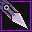
Kunai
Resolve Assassin Combo Skill
Combo Skill. Throw a knife at target enemy that deals 2..20..24-4..39..48 damage. Gain Combo: Star Storm - Your next combo skill also throws a shuriken at its target that deals 2..20..24-4..39..48 damage.
-
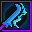
Energy Blade
Might Assassin Combat Skill
If this attack hits you gain 5..20..24 energy. If a combo effect is triggered this attack recharges instantly.
-
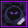
Stealth
Class Core Assassin Skill
Hide yourself, allowing you to sneak past enemies. If you attack while hidden you deal a little extra damage, but also take extra damage if you get attacked. Taking or dealing damage or using this skill again will remove you from Stealth.
-
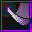
Fade Strike
Class Core Assassin Combat Skill
If your target is targeting you this attack deals half damage and you gain combo: Solemn Calm - your next combo skill reduces how threatening your target thinks you are by about 10..50..60%.
-
Slipstrike
Might Assassin Combo Combat Skill
Teleport to behind your target and immediately attack for +1..8..10 damage.
-
Evasive Stance
Might Assassin Stance
For 10 seconds you focus on dodging incoming attacks, giving you a 15..75..90% chance to evade incoming physical or elemental damage. This stance ends if you use a skill.
-
Ethereal Flame
Dark Arts Assassin Combo Spell
Conjure a ghostly fire around target enemy, dealing 1..24..30-3..38..47 damage and draining 10..40..48 energy over the next 10 seconds. You gain Spirit Fire, causing your next combo skill to drain 5..15..18 energy.
-
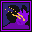
Blinding Powder
Focus Assassin Skill
Throw some vile powder into target enemy's eyes, blinding them for 5..25..30 seconds. While blind, they have 50% reduced accuracy.
-

Blade Weave
Might Assassin Combo Skill
Attack instantly for +1..10..12 damage, and an additional +3..30..37 if this triggers a combo skill.
-
Reverse Strike
Resolve Assassin Combo Combat Skill
Attack your target immediately. The attack deals no damage, but you gain a second wind which heals you for 200..1000..1200% the amount that would be dealt. Gain Combo: Melding Shadow - your next combo skill heals you for 3..50..62
-
Poison Powder
No Stat Assassin Combat Skill
Sprinkle target enemy with a heaping helping of poisonous powder. The powder extends the duration of poisons on them by 50%
-
Impending Doom
Dark Arts Assassin Curse Spell
Lay a deadly curse on target enemy that deals 1..20..25-2..40..50 Shadow damage after 10 seconds. If this curse is ended prematurely they take the normal damage and an additional 7..113..140 Shadow damage.
-
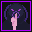
Deadly Silence
No Stat Assassin Skill
An unnatural silence falls upon your target, interrupting them if they're casting a spell. Gain Combo: Solemn calm - your next combo skill reduces how threatening your target thinks you are by about 20%
-
Shadowed Blade
Resolve Assassin Combo Combat Skill
A sneaky stab that deals +2..23..28 damage if your target isn't targeting you.
-
Critical Essence
Resolve Assassin Stance
For 8..30..36 seconds you are healed for 3..72..89-5..64..79 when you land a critical strike. Gain Combo: Melding Shadow - your next combo skill heals you for 4..85..105.
-
Mage Breaker
Focus Assassin Combo Combat Skill
If this attack hits, your target is interrupted. If a spell is interrupted this attack deals +4..33..40 damage and you gain combo: Spirit Fire - your next combo skill drains 2..10..12 energy.
-
Mark of Death
Dark Arts Assassin Curse Spell
Mark target enemy for death for ten seconds, causing the next combat skill that hits them to deal an extra 1..16..20 damage. Gain Combo: Dark Judgement - your next combo skill deals unavoidable Shadow damage.
-
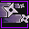
Shuriken
Resolve Assassin Combo Skill
Throw a knife at target enemy, dealing 1..26..32-2..44..54 physical damage and slowing their movement by 33% for 10 seconds. Gain Combo: Critical Eye - your next combo skill has a 15..33..38% greater chance of being a critical hit.
-
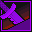
Final Strike
Might Assassin Combo Combat Skill
With a quick flourish this attack deals 1..12..15 extra damage for each skill you have that's recharging. If target enemy is below 25% health this attack will be a critical hit.
-

One With Darkness
Dark Arts Assassin Enhancement Spell
For 30 seconds your connection with darkness restores 1..5..6 energy whenever you use a shadow or poison damage skill.
-
Envenom
Focus Assassin Combo Spell
Splash an enemy with a magic poison that deals 2..16..20-4..39..48 poison damage. Gain Combo: Venom Web - your next combo skill also slows your target's movement by 20% and deals 3..42..52 poison damage over 15 seconds.
-
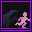
Pursuit
Might Assassin Stance
For 5 seconds you move 25..65..75% faster. Gain Combo: Venom Web - your next combo skill also slows your target's movements by 20% and deals 3..42..52 poison damage over 15 seconds.
-
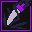
Phantom Strike
Class Core Assassin Combat Skill
Strike from the shadows, dealing 1..13..16-3..27..33 damage and instantly entering Stealth. This attack does not threaten enemies.
-
Vanish
Class Core Assassin Skill
If you are not currently being targeted by an enemy you vanish in a puff of smoke, immediately entering Stealth and reducing the likelihood of enemies to target you based on your Subterfuge stat.
-
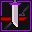
First Strike
Might Assassin Combat Skill
Attack for +4..50..62 damage, this bonus damage is reduced by 1..7..8 for every skill other than this one that you currently have recharging.
-

Shadow Dart
Dark Arts Assassin Skill
Throw a dart of shadow at target enemy for 3..31..38-5..47..58 Shadow damage. If you are effected by an equipment spell this spell recharges instantly.
-
Double Strike
No Stat Assassin Combo Combat Skill
Attack twice rapidly. Each of these attacks deals half of their normal damage. Active combo effects are triggered for both attacks.
-
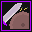
Sharpen Blades
No Stat Assassin Enhancement Skill
Quickly sharpen your weapon, giving it 50% armor penetration for 15 seconds. Gain Combo: Critical Eye - your next combo skill to has a 50% greater chance of being a critical hit.
-
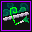
Blowdart
Resolve Assassin Combo Skill
Shoot a dart at target enemy that deals 1..10..12-2..20..24 damage and poisons them for 3..25..30-5..42..51 over the next 30 seconds. Gain Combo: Venom Web - your next combo skill also slows your target's movement by 20% and deals 4..30..36 poison damage over 15 seconds.
-
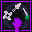
Quick Draw
Resolve Assassin Skill
Prepare some extra projectiles for throwing, the next 1..5..6 times you use Shuriken, Blowdart, or Kunai within 30 seconds you fire an extra projectile. Gain Combo: Star Storm - Your next combo skill also throws a shuriken at its target that deals 1..14..17-3..26..32 damage.
-
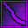
Ghost Slash
Focus Assassin Combo Combat Skill
Attack with a weapon cloaked in cold fire that deals 1..28..35 damage and ignores armor. Gain Combo: Spirit Fire - your next combo skill drains 2..20..24 energy.
-

Pounce
Might Assassin Combo Combat Skill
Pounce on target enemy, dealing 3..46..57 damage and interrupting any spells they're casting. Gain Critical Eye, giving your next combo skill an additional 10..30..35% chance to be a critical hit.